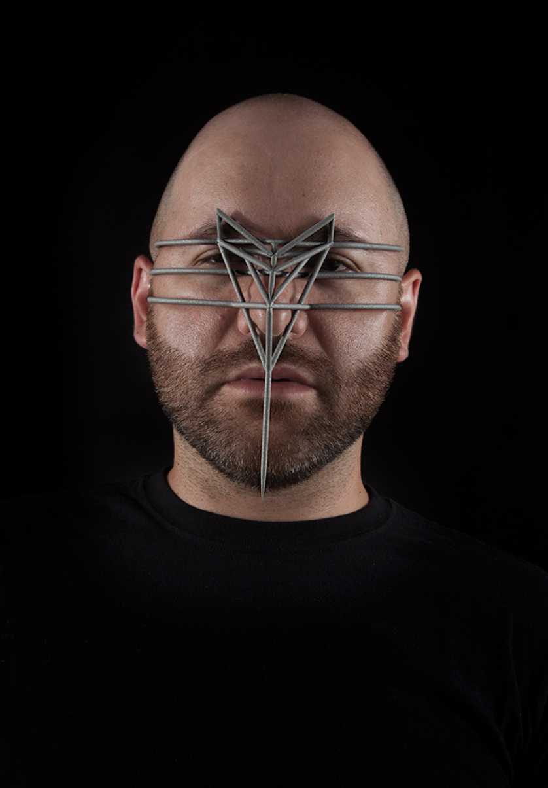
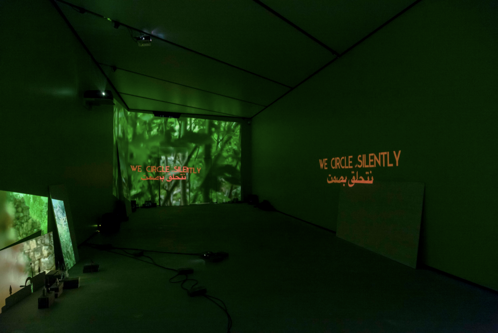
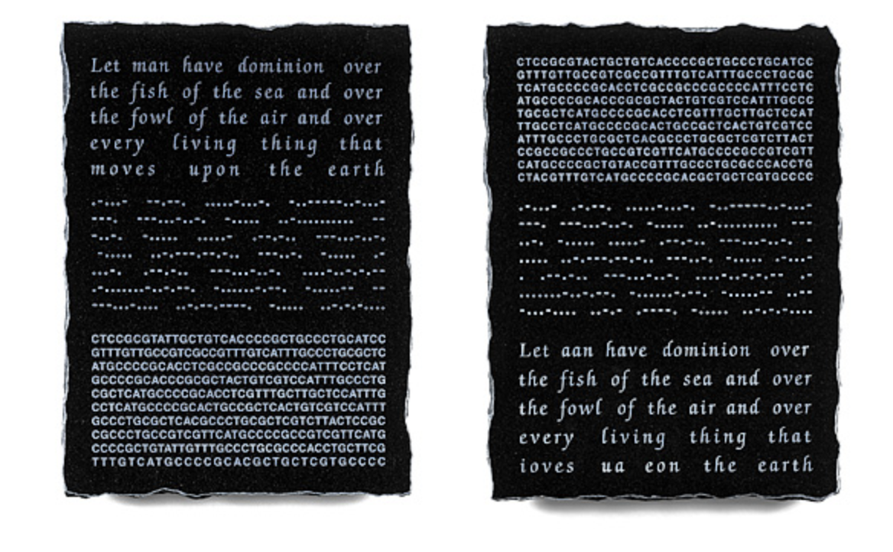
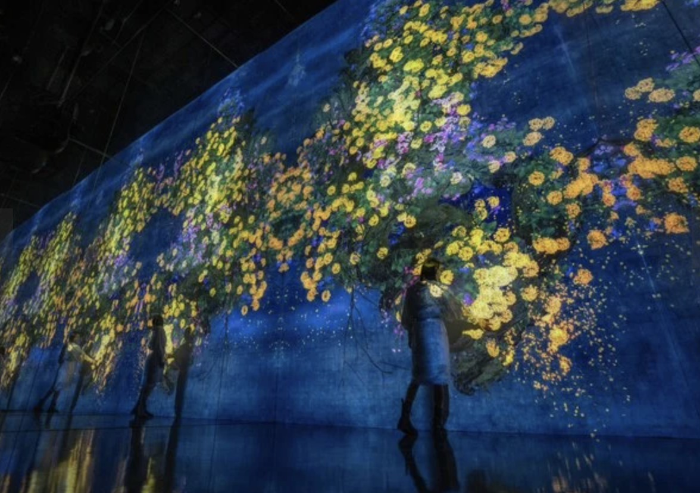
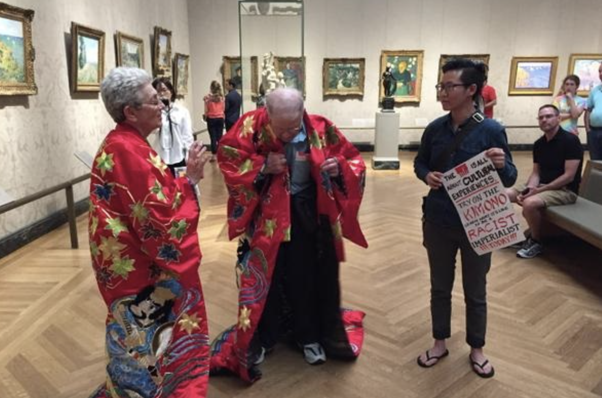
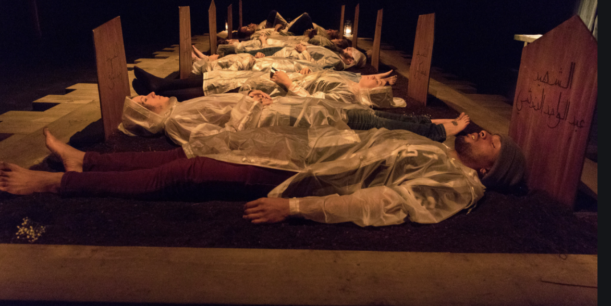
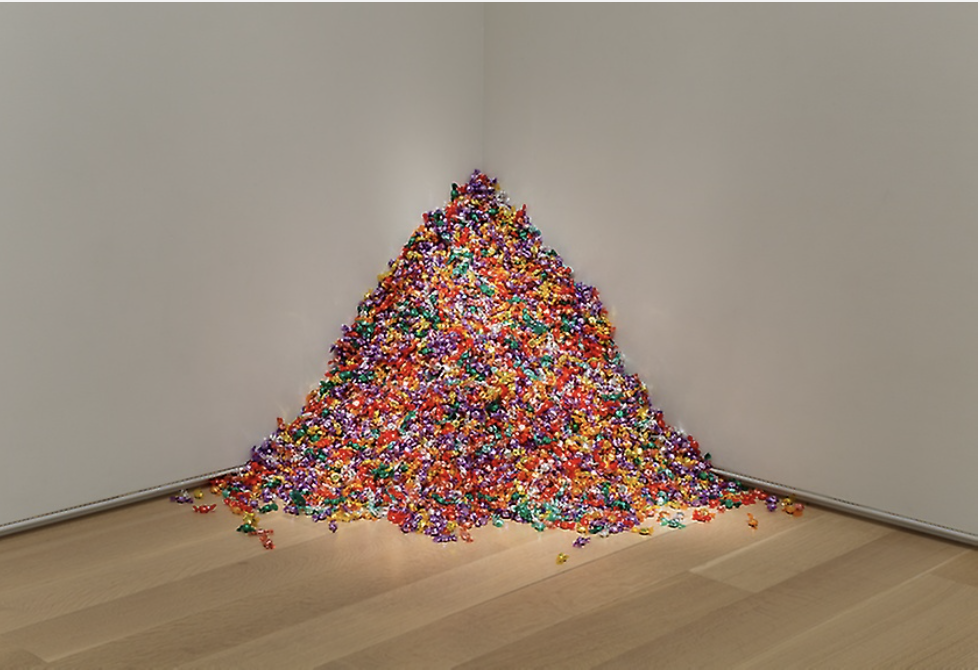
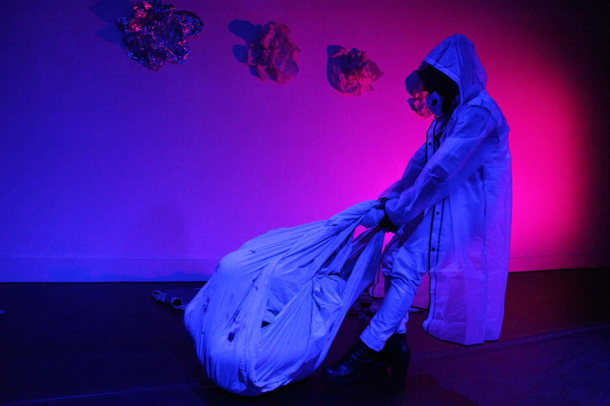
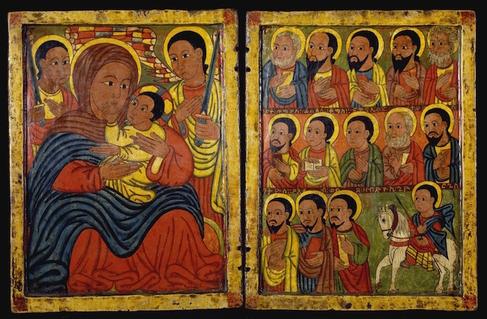

Bodies

Biometric machines perpetuate harmful forms of discrimination and reduce humanity into diagrams used for for authentication, tracking and other forms of surveillance.
This performance is used to critique the rising biometric industry that transforms humanity into “a cage of information” through surveillance, bias and violence. It exaggerates these reductions done by biometric machines, transforming humanity into a material object for ones’ use which allows us to question our bodies (and datas’) relation to authoritarian powers and power structures.


The project aims at tackling the violence that dominates our contemporary moment and questions what happens to material objects, such as people and objects, when a living fabric is destroyed.
The project consists of a 5-channel video projection, 2-channel sound + subwoofer, tools, bricks, and boards. It explores these notions in the context of the Palestinian occupation by using material from destroyed sites in some areas in Palestine shedding light on he intersection between performance, the body and thingness through themes erasures, reappearances and resistance.


The project aims at exploring the intricate relationship between nature and belief systems. It looks at the most basic form of biology, DNA, and uses it to represent verses from the book of Genesis. It links religion, specifically Christianity which has dominated western projections, to a basic component of the human body. Though it emphasizes the dynamic nature of Bible in its interpretation, it still implies a link between the two with human superiority over nature further fueled by religious beliefs.


This project aims to explore the relationship between humanity and nature. Throughout the exhibit, the boundary between the visitor and the art is pushed to new limits. In some areas standing the space will start to bloom flowers while touching them will activate others. With TeamLab’s commitment fascination to the interconnectedness of their installations, an interaction in one country could affect another, so the piece is dynamic on various levels exploring all the tiers of connectedness between humans and nature.


This project aimed to get participants to interact with a cultural garment and appreciate and understand its importance. The resulting backlash exposes a lapse in judgement of telling the story or expressing this culture. This piece exposes the western perspective of telling or showing other cultures. Even in a multicultural society, like that of the U.S., the stories of many minority groups such as this is reduced to oriental or fantastical images and projects.


This project aims at using interactive sound performance to emerge the audience into a storytelling experience that forces these participants to bare witness the narratives of 10 ordinary people buried in Syrian gardens during the uprising against the Assad regime. The piece exposes a narrative heard directly from the source, a feature not often seen in art but drastically important in driving the point of recognizing more decolonial artworks. It explores the relationship between the witness and the interaction to showcase a important catalyst for discourse.


Untitled” (Portrait of Ross in L.A.) is a minimalistic and conceptual artpiece, which allows visitors to take candy from it, ultimately resulting in the decrease of size and weight of the work. This audience interaction is a commentary to unknowingly allow audience members to be ‘seduced into queer intimacy.’ Displayed shortly after the AIDS crisis and the extraordinary public politicization of art in the 1980s, this artwork is a great and needed representation of Queerness from a Western perspective.


Presenting important and popular discussions on trans-religious rights, trauditions, and beliefs, They Told us to Wear Masqs was a starting point in a series of experiments that set the stage for much of how the rest of the series would unfold. Born in Damuscus, Bhutto is a visual artist, performer and curator who’s work unpacks the intersections of queerness, Islam, speculative fiction, through a multi-media practice rooted in printmaking, textile work and performance, tying together political activism and awareness, with his unique aesthetic.


The Heavenly and Earthly Trinities by Bartolomé Esteban Murillo, is one of his best known artworks. In this painting, the artist depicts a scene which is not explicitly mentioned in the Holy Bible. It is the scene of the resting of the infant Christ, the Virgin Mary, and Saint Joseph. The artwork is presented in a typical Western European fashion of religious artwork from the 17th century. The motive behind it is the portrayal of the two Holy Trinities, one on the Earth and one in Heaven.


This artwork created during the 15th century in Ethiopia, and falls under the category of iconography, depicts a common scene found in other Christian icons. On its left side it depicts the Holy Virgin and the Holy Infant, in which Christ is softly touching his mother’s face as a symbol of love and caring. The family is protected by two armed Angels, which symbolizes divine protection. On the right side of the artwork we can see the thirteen Apostles and St. George facing towards the Holy Virgin and young Christ.